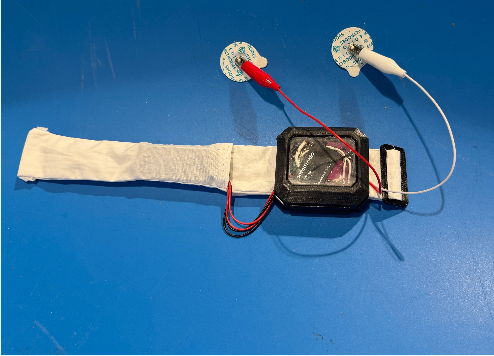

Project 02
Continuous Monitoring System for Alcohol Withdrawal Patients

Overview
This project focused on developing a Bluetooth-enabled wristband for continuous monitoring of patients experiencing Alcohol Withdrawal Syndrome. The system was designed to monitor physical indicators such as tremors and sweat response.
The project was developed in collaboration with Dr. Neil Stafford at Duke University Hospital and involved both engineering design and software development.
Role
I led a four-person software team responsible for developing the software workflow, sensor data handling, and Bluetooth communication components of the system.
Device photo or prototype image
System diagram or data plot
Technical Focus
The project involved Bluetooth communication, Python software development, hardware-software integration, and user-centered engineering design for a clinical environment.